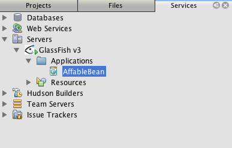

Apache NetBeans
Apache NetBeansLatest release
NetBeans Eコマースのチュートリアル - 開発環境の設定
| This tutorial needs a review. You can edit it in GitHub following these contribution guidelines. |

Figure 1. このページの内容は、NetBeans IDEバージョン6.8および6.9に適用されます
以下の手順では、開発環境の設定方法について説明します。このプロセスでは、IDEのいくつかのプライマリ・ウィンドウについて学習し、IDEがAntビルド・スクリプトを使用してプロジェクトに共通するアクションをどのように実行するかを理解します。このチュートリアル・ユニットを終了するまでには、Webアプリケーション・プロジェクトの作成を完了し、プロジェクトをビルドして開発サーバーにデプロイし、IDEから実行できることを確認していることでしょう。
また、IDEをMySQLデータベース・サーバーに接続し、データベース・インスタンスを作成し、IDEの「サービス」ウィンドウからデータベース・インスタンスに接続する方法を学習します。このユニットでは、チュートリアル全体で使用する`affablebean`という名前の新しいデータベースを作成します。
このチュートリアルでビルドするアプリケーションのライブ・デモを、NetBeans Eコマースのチュートリアルのデモ・アプリケーションで表示できます。
| ソフトウェアまたはリソース | 必須バージョン |
|---|---|
Javaバンドル版、6.8または6.9 |
|
バージョン6 |
|
v3またはOpen Source Edition 3.0.1 |
|
バージョン5.1 |
*注意: *
-
NetBeans IDEが正常に動作するには、JDK (Java Development Kit)が必要です。上記に一覧表示されているいずれのリソースもインストールされていない場合は、最初にJDKをダウンロードしてインストールするようにしてください。
-
NetBeans IDEのJavaバンドル版には、このチュートリアルでビルドするアプリケーションに必要なJava WebおよびEEテクノロジが含まれています。
-
NetBeans IDEのJavaバンドル版には、このチュートリアルに必要なGlassFishサーバーも含まれています。GlassFishサーバーを別個にダウンロードすることもできますが、NetBeansダウンロードに付属するバージョンを使用すると、IDEに自動的に登録されるので便利です。
Webプロジェクトの作成
-
NetBeans IDEを起動します。初めてIDEを実行している場合は、IDEのスタート・ページが表示されます。

Figure 2. NetBeans IDEのスタート・ページ
-
「新規プロジェクト」(
 )ボタンをクリックして([Ctrl]-[Shift]-[N]、Macの場合は[⌘]-[Shift]-[N])、新しいJava Webプロジェクトを作成します。プロセスをガイドする新規プロジェクト・ウィザードが開きます。「カテゴリ」から「Java Web」を選択し、次に「プロジェクト」から「Webアプリケーション」を選択します。
)ボタンをクリックして([Ctrl]-[Shift]-[N]、Macの場合は[⌘]-[Shift]-[N])、新しいJava Webプロジェクトを作成します。プロセスをガイドする新規プロジェクト・ウィザードが開きます。「カテゴリ」から「Java Web」を選択し、次に「プロジェクト」から「Webアプリケーション」を選択します。

Figure 3. 新規プロジェクト・ウィザードを使用したプロジェクトの作成
-
「次」をクリックします。
-
ステップ2の「名前と場所」で、プロジェクトに「
AffableBean」という名前を付けます。このステップでは、プロジェクトが存在するコンピュータ上の場所を指定することもできます。デフォルトでは、IDEはホーム・ディレクトリ内に`NetBeansProjects`フォルダを作成します。場所を変更する場合は、「プロジェクトの場所」テキスト・フィールドにパスを入力します。
-
「次」をクリックします。
-
ステップ3の「サーバーと設定」で、開発中にプロジェクトをデプロイするサーバーとしてGlassFish v3を指定します。NetBeansインストールにはGlassFish v3が含まれているので、「サーバー」ドロップダウン・フィールドには「GlassFish v3」が表示されています。
IDEにまだ登録していないサーバーをデプロイする場合は、「追加」ボタンをクリックしてサーバー・インスタンスの追加ウィザードを実行します。IDEに登録されているすべてのサーバーは、「サーバー」ウィンドウ(メイン・メニューから「ツール」>「サーバー」を選択)から表示できます。
-
「Java EEバージョン」で、「Java EE 6 Web」を選択します。
作成するアプリケーションでは、Java EE 6の様々な機能、つまり、サーブレット注釈(サーブレット3.0仕様の新機能)とサーブレット・コンテナ内で直接使用されるEJB (EJB 3.1仕様の新機能)を使用します。サーブレット3.0とEJB 3.1はどちらもJava EE 6プラットフォームの一部であるため、このチュートリアルに沿って作業するには、GlassFish v3などのEE 6準拠サーバーが必要です。詳細は、仕様および実装についてを参照してください。
-
「コンテキストと依存性の注入を有効にする」オプションが選択されていないことを確認します。このオプションは、JSR-299で規定されているコンテキストと依存性の注入(CDI: Contexts and Dependency Injection)テクノロジに固有のもので、このチュートリアルでは使用しません。詳細は、コンテキストと依存性の注入およびJSF 2.0の開始を参照してください。

Figure 4. 開発サーバー、EEバージョン、CDIサポートを含めるかどうかの指定
デフォルトでは、アプリケーションのコンテキスト・パスはプロジェクトの名前です。これは、アプリケーションがサーバーにデプロイされた後でアクセスできるパスです。たとえば、GlassFishはデフォルトのポート番号として8080を使用するため、開発中はブラウザ・ウィンドウで以下からプロジェクトにアクセスできます。
http://localhost:8080/AffableBean/-
「終了」をクリックします。IDEは、J2EE BlueprintsのWebアプリケーション構造の規約に準拠した`AffableBean`という名前のスケルトン・プロジェクトを生成します。IDEに、デフォルト・レイアウトで様々なウィンドウが表示されます。
-
IDEのデフォルト・レイアウトを確認します。ここでは、表示されるウィンドウとタブについて簡単に説明します。
-
*エディタ: *エディタ([Ctrl]-[0]、Macの場合は[⌘]-[0])は、IDEの中心的なコンポーネントであり、作業時間のほとんどを費やす可能性がある場所です。エディタは、使用している言語に自動的に適応し、コーディングで使用するテクノロジに固有のドキュメント・サポート、コード補完、ヒントおよびエラー・メッセージを提供します。
-
*「プロジェクト」ウィンドウ: *「プロジェクト」ウィンドウ([Ctrl]-[1]、Macの場合は[⌘]-[1])は、プロジェクト・ソースへのエントリ・ポイントです。重要なプロジェクト内容の_論理ビュー_が表示され、ファイルがその機能(たとえば、
構成ファイル)に基づいてグループ分けされています。「プロジェクト」ウィンドウ内でファイル・ノードを右クリックすると、開発タスクに共通するアクション(つまり、Build、Clean、Deploy、Run)をコールできます。 -
*「ファイル」ウィンドウ: *「ファイル」ウィンドウ([Ctrl]-[2]、Macの場合は[⌘]-[2])には、プロジェクトがディレクトリ・ベースで表示されます。つまり、コンピュータのファイル・システムに存在するプロジェクトの構造を表示できます。このウィンドウから、Antビルド・スクリプト(
build.xml)やIDEでプロジェクトを処理するのに必要な(`nbproject`フォルダに格納された)ファイルを含む、プロジェクトに関係するすべてのファイルを表示できます。プロジェクトを実行した場合は、コンパイルされたJavaファイルの場所(`build`フォルダ)を表示できます。(「プロジェクト」ウィンドウのプロジェクト・ノードの右クリック・メニューから「ビルド」または「消去してビルド」を選択して)プロジェクトを明示的にビルドした場合は、(`dist`フォルダに格納された)プロジェクトの配布可能WARファイルを表示できます。 -
*ナビゲータ: *ナビゲータ([Ctrl]-[7]、Macの場合は[⌘]-[7])には、エディタで開いたファイルの構造の概要が表示されます。たとえば、HTML Webページが表示されている場合は、ナビゲータに、そのページのDocument Object Model (DOM)に対応する方法でタグ・ノードが一覧表示されます。エディタでJavaクラスを開いている場合は、ナビゲータに、そのクラスに関係するプロパティとメソッドが表示されます。ナビゲータを使用して、エディタ内の項目に移動できます。たとえば、ナビゲータ内のノードをダブルクリックすると、カーソルがエディタ内のその要素に直接移動します。
-
*「タスク」ウィンドウ: *「タスク」ウィンドウ([Ctrl]-[6]、Macの場合は[⌘]-[6])では、コードが自動的にスキャンされ、コンパイル・エラー、簡易修正およびスタイルの警告を含む行が一覧表示されます。Javaクラスの場合は、「
TODO」や「FIXME」などの語句を含むコメント行が一覧表示されます。 -
*「サービス」ウィンドウ: *「サービス」ウィンドウ([Ctrl]-[5]、Macの場合は[⌘]-[5])は、サーバー、Webサービス、データベースとデータベース接続、およびチーム開発に関連するその他のサービスを管理するためのインタフェースを提供します。
-
*「出力」ウィンドウ: *(表示されていません)「出力」ウィンドウ([Ctrl]-[4]、Macの場合は[⌘]-[4])は、一般にサーバーなどの外部リソースからのサービスを起動するアクションをコールしたときに自動的に表示され、サーバーのログ・ファイルをミラー化できます。また、Webプロジェクトでは、Antタスクに関連する情報(たとえば、
Build(ビルド)、Clean and Build(消去してビルド)、Clean(消去)など)も表示できます。 -
*パレット: *_(表示されていません)_パレット([Ctrl]-[Shift]-[8]、Macの場合は[⌘]-[Shift]-[8])は、エディタにドラッグ・アンド・ドロップできる各種の便利なコード・スニペットを提供します。パレットに含まれるスニペットの多くは、後で説明するように、エディタ内でコード補完を呼び出すことによってアクセスできます。
-
*注意: *IDEのウィンドウは、すべて「ウィンドウ」メニュー項目からアクセスできます。
Webプロジェクトの実行
-
新しい`AffableBean`プロジェクトを実行します。「プロジェクト」ウィンドウで、プロジェクト・ノードを右クリックして「実行」を選択するか、IDEのメイン・ツールバーで「プロジェクトの実行」(
 )ボタンをクリックすることで([F6]、Macの場合は[fn]-[F6])、これを実行できます。
)ボタンをクリックすることで([F6]、Macの場合は[fn]-[F6])、これを実行できます。
ブラウザ・ウィンドウが開き、プロジェクトの開始画面が表示されます。

Figure 5. プロジェクトがサーバーに自動的にデプロイされてブラウザに表示される
では、何か起きたのでしょうか。Webプロジェクトを実行すると、IDEはプロジェクトのビルド・スクリプト内の`run` Antターゲットを呼び出します。プロジェクトの`build.xml`ファイルをエディタで開いて調べることができます。
-
「ファイル」ウィンドウに切り替えて([Ctrl]-[2]、Macの場合は[⌘]-[2])、プロジェクト・ノードを展開し、プロジェクトに含まれる`build.xml`ファイルをダブルクリックします。`build.xml`ファイルがエディタで開くと、スクリプトで使用できるすべてのAntターゲットがナビゲータに一覧表示されます。

Figure 6. ナビゲータにbuild.xmlスクリプトの使用可能なすべてのAntターゲットが一覧表示される
通常のAntターゲットは汎用のターゲット( )アイコンを使用して表示されます。_強調された_Antターゲット(
)アイコンを使用して表示されます。_強調された_Antターゲット( )アイコンは、単にそのターゲットに(前述のイメージに示すように)ツールチップとして表示される説明が含まれることを示しています。詳細は、Javaプロジェクトの作成、インポート、および構成を参照してください。
)アイコンは、単にそのターゲットに(前述のイメージに示すように)ツールチップとして表示される説明が含まれることを示しています。詳細は、Javaプロジェクトの作成、インポート、および構成を参照してください。
-
`run`ターゲットをダブルクリックします。`build-impl.xml`ファイルがエディタで開き、ターゲットの定義が表示されます。
<target depends="run-deploy,run-display-browser" description="Deploy to server and show in browser." name="run"/>`build.xml`のターゲットをクリックしたときに、なぜ`build-impl.xml`ファイルが開いたのでしょうか。([Ctrl]-[Tab]を押して)再度`build.xml`に切り替えてファイルの内容を調べると、以下の行が表示されます。
<import file="nbproject/build-impl.xml"/>プロジェクトのビルド・スクリプトは、`nbproject/build-impl.xml`からNetBeansで定義されたターゲットがインポートされる、基本的に空のファイルです。
プロジェクトの標準の`build.xml`スクリプトは、新しいターゲットを追加するか、NetBeansで定義された既存のターゲットをオーバーライドすることによって、自由に編集できます。しかし、`build-impl.xml`ファイルは編集しないでください。
run`ターゲットの定義を見ると、以下のターゲットに依存していることがわかります。
* `run-deploy
* run-display-browser
`build-impl.xml`ファイルの他の部分を調べると、これらのターゲットが互いにもう一方のターゲットに依存していることがわかります。しかし、基本的には`run`ターゲットが呼び出されたときに以下のアクションが行われます。
1. プロジェクトがコンパイルされます。
2. WARファイルが作成されます。
3. サーバーが起動します(まだ実行されていない場合)。
4. WARファイルが指定されたサーバーにデプロイされます。
5. ブラウザが開き、サーバーのURLとアプリケーションのコンテキスト・パスが表示されます。
Antの使用方法については、Ant公式マニュアルを参照してください。
-
プロジェクトの配布可能WARファイルを生成するには、IDEの「実行」メニューから「プロジェクトを消去してビルド」(または「メイン・プロジェクトを消去してビルド」)を選択します。
-
「ファイル」ウィンドウ([Ctrl]-[2]、Macの場合は[⌘]-[2])でプロジェクト・ノードを展開します。`dist`フォルダにプロジェクトのWARファイルが格納されています。`build`フォルダにコンパイルされたプロジェクトが格納されています。

Figure 7. 「ファイル」ウィンドウにプロジェクトがディレクトリ・ベースで表示される
*注意: *(「プロジェクト」ウィンドウでプロジェクト・ノードの右クリック・メニューから「消去」を選択して)プロジェクトを_消去_すると、これらのフォルダが両方とも除去されます。
-
「サービス」ウィンドウに切り替えて([Ctrl]-[5]、Macの場合は[⌘]-[5])、「サーバー」>「GlassFish Server 3」>「アプリケーション」ノードを展開します。

Figure 8. 「サービス」ウィンドウにサーバー・ステータス、デプロイされたアプリケーションおよびリソースが表示される
*注意: *「GlassFish v3」はNetBeans 6.8ユーザー用のデフォルトのサーバー名です。
GlassFishサーバー・ノード上の緑色の矢印アイコン( )は、サーバーが実行されていることを示します。「アプリケーション」フォルダには、デプロイされたすべてのアプリケーションが一覧表示されます。`AffableBean`アプリケーションが正常にデプロイされていることがわかります。
)は、サーバーが実行されていることを示します。「アプリケーション」フォルダには、デプロイされたすべてのアプリケーションが一覧表示されます。`AffableBean`アプリケーションが正常にデプロイされていることがわかります。
この段階で、IDEでのJava Webプロジェクトの作成を完了し、それを問題なくビルドして開発サーバーにデプロイし、実行時にブラウザで開くことができることを確認しました。
データベース・サーバーとの通信
MySQLデータベース・サーバーをダウンロードしてインストールすると、IDEから接続できるようになります。デフォルトのインストールでは、ユーザー・アカウントとして「root」、パスワードとして「」(空文字列)を使用してデータベース・サーバーに接続します。ただし、GlassFishでは接続の問題があるため、パスワードが空でないアカウントを使用することをお薦めします。[1]以下の手順では、MySQLのコマンド行からデータベース・サーバーを実行し、root`アカウントのパスワードを「`nbuser」に変更する方法を示します。この「root」と「nbuser」の組合せは、NetBeans Eコマース・チュートリアル全体で使用します。データベース・サーバーを実行して適切に構成したら、IDEにそれを登録し、データベース・インスタンスを作成します。
*注意: *以下のコマンド行の手順は、PATH`環境変数に`mysql`コマンドを追加したことが前提になっています。(していない場合は、コマンド行に`mysql`コマンドを入力したときに「`mysql: command not found」というエラーが表示されます。)
PATH`に`mysql`を追加していない場合は、かわりにMySQLインストールの`bin`ディレクトリへのフル・パスを入力してコマンドをコールできます。たとえば、`mysql`コマンドがコンピュータの/usr/local/mysql/bin`にある場合は、以下を入力します。
shell> */usr/local/mysql/bin/*mysql -u root詳細は、MySQL公式リファレンス・マニュアルの以下を参照してください。
次の手順を実行します。
MySQLが実行中かどうかの確認
IDEからMySQLサーバーに接続する前に、サーバーが実行されていることを確認する必要があります。これを行う1つの方法は、`mysqladmin`クライアントの`ping`コマンドを使用することです。
-
コマンド行プロンプトを開き、以下を入力します。
shell> mysqladmin pingサーバーが実行されている場合は、以下のような出力が表示されます。
mysqld is aliveサーバーが実行されていない場合は、以下のような出力が表示されます。
mysqladmin: connect to server at 'localhost' failed
error: 'Can't connect to local MySQL server through socket '/tmp/mysql.sock'
Check that mysqld is running and that the socket: '/tmp/mysql.sock' exists!データベース・サーバーの起動
MySQLサーバーが実行されていない場合は、コマンド行から起動できます。プラットフォーム間共通の簡単な概要については、2.13.1.2. MySQLの自動的な開始と停止を参照してください。以下の手順は、オペレーティング・システムに応じた一般的なガイダンスを示しています。
UNIX系システム:
UNIX系システムでは、`mysqld_safe`を呼び出してMySQLサーバーを起動することをお薦めします。
-
コマンド行プロンプトを開き、`mysqld_safe`コマンドを実行します。
shell> sudo ./mysqld_safe次のような出力が表示されます。
090906 02:14:37 mysqld_safe Starting mysqld daemon with databases from /usr/local/mysql/dataWindows:
MySQLのWindowsインストーラを使用すると、データベース・サーバーをWindowsサービスとしてインストールすることで、MySQLをオペレーティング・システムと一緒に自動的に起動および停止できます。データベースを手動で起動する必要がある場合は、インストール・ディレクトリの`bin`フォルダにある`mysqld`コマンドを実行します。
-
Windowsのコンソール・ウィンドウを開きます(「スタート」メニューから「ファイルを指定して実行」を選択し、テキスト・フィールドに「
cmd」と入力します)。コマンド行ウィンドウが表示されます。 -
このコマンドを入力します(示されているパスは、バージョン5.1をデフォルトのインストール場所にインストールした場合のものです)。
C:\> "C:\Program Files\MySQL\MySQL Server 5.1\bin\mysqld"詳細は、MySQL公式リファレンス・マニュアルの2.4.5.5. Windowsコマンド行からのMySQLの開始を参照してください。
パスワードの変更
root`アカウントのパスワードを「`nbuser」に設定するには、以下の手順を実行します。
-
コマンド行プロンプトを開き、以下を入力します。
shell> mysql -u root
mysql> UPDATE mysql.user SET Password = PASSWORD('nbuser') WHERE User = 'root';
mysql> FLUSH PRIVILEGES;詳細は、MySQL公式リファレンス・マニュアルの2.13.2. 初期MySQLアカウントの保護を参照してください。
IDEでのサーバーの登録
IDEの「サービス」ウィンドウでは、サーバーへの接続、サーバーの起動と停止、データベース・インスタンスとそれらに含まれるデータの表示、およびサーバーに対する外部管理ツールの実行ができます。
-
「サービス」ウィンドウで、「データベース」ノードを右クリックして「MySQLサーバーを登録」を選択します。

Figure 9. IDEの「サービス」ウィンドウの「MySQLサーバーを登録」
「MySQLサーバー・プロパティ」ダイアログの「基本プロパティ」タブに、MySQLサーバー・インストールのデフォルト設定を表示できます。これらを次に示します。
* *サーバー・ホスト名: *localhost
* *サーバー・ポート番号: *3306
* *管理ユーザー名: *root
* *管理パスワード: *nbuser
-
「パスワードを保存」オプションを選択します。

Figure 10. MySQLサーバーの設定の指定
-
「OK」をクリックします。IDEがMySQLデータベース・サーバーに接続し、サーバーによって管理されているデータベース・インスタンスが一覧表示されます。また、「ドライバ」ノードを展開すると、IDEにMySQL用のConnector/J JDBCドライバが含まれていることがわかります。

Figure 11. 「サービス」ウィンドウでのMySQLサーバーへの接続
アプリケーション・サーバー(つまり、GlassFish)には、JavaコードとMySQLデータベース間の通信を有効にするドライバが必要です。IDEにはすでにConnector/Jドライバが含まれているので、ダウンロードする必要はありません。また、後で説明するように、サーバー設定でJDBCドライバをデプロイするように指定できるので、ドライバがサーバー上にない場合は自動的にGlassFishにデプロイされます。
以下のステップ4から7はオプションです。MySQLサーバーを起動および停止したり、サーバーに対して外部管理ツールを実行したりするようにIDEを構成できます。
-
「MySQLサーバー」ノードを右クリックして「プロパティ」を選択します。「MySQLサーバー・プロパティ」ダイアログで「管理プロパティ」を選択します。
-
「管理ツールのパスまたはURL」フィールドに、コンピュータ上にあるデータベース管理ツール(MySQL Administratorなど)の実行可能ファイルへのパスを入力します。MySQL Administratorは、MySQL GUI Toolsバンドルに含まれています。
-
「起動コマンドへのパス」フィールドに、オペレーティング・システムに応じたMySQLの起動コマンド(つまり、
mysqld`または`mysqld_safe)へのパスを入力します。(上記のデータベース・サーバーの起動を参照してください。)
*注意: *Unix系システムでは、起動コマンドを呼び出すことができるのはrootまたは管理者権限を持つユーザーのみである場合があります。これを解決するため、(LinuxおよびSolarisの場合はGKSu、Macの場合はosascriptを使用して)この作業を行うスクリプトを作成できます。詳細は、このブログ投稿を参照してください。
-
「停止コマンドへのパス」フィールドに、MySQLの停止コマンド(つまり、
mysqladmin shutdown)へのパスを入力します。このコマンドは停止権限を持つユーザー・アカウントを必要とするので、「引数」フィールドにユーザー名/パスワード資格情報を入力する必要があります。例:-
*引数: *
-u root -pnbuser shutdown
-
「詳細プロパティ」タブの下に一覧表示されたフィールドを設定すると、以下ができるようになります。
-
*MySQLサーバーの起動: *MySQLサーバー・ノードを右クリックして「起動」を選択します。
-
*MySQLサーバーの停止: *MySQLサーバー・ノードを右クリックして「停止」を選択します。
-
*外部管理ツールの実行: *MySQLサーバー・ノードを右クリックして「管理ツールを実行」を選択します。
データベース・インスタンスの作成
-
このチュートリアルで使用するデータベース・インスタンスを作成します。これを行うには、MySQLサーバー・ノードを右クリックして「データベースを作成」を選択します。
-
表示されるダイアログで、「
affablebean」と入力します。「フル・アクセスを許可」オプションを選択し、ドロップダウン・フィールドから「root@localhost」を選択します。これにより、`localhost`ホスト上の`root`アカウントがデータベースにアクセスできるようになります。後でサーバー上に接続プールを作成するときは、サーバーにデータベースへのアクセスを許可するため、ユーザー名/パスワード資格情報として`root`アカウントと`nbuser`パスワードを設定する必要があります。

Figure 12. サーバー・ノードを右クリックして「データベースを作成」を選択し、新しいデータベース・インスタンスを作成する
-
「OK」をクリックします。これを行うと、`affablebean`という名前のデータベースが作成され、データベースへの接続が自動的に確立されます。接続は、接続ノード(
 )を使用して「サービス」ウィンドウに表示されます。
)を使用して「サービス」ウィンドウに表示されます。
*注意: *接続ノードは「サービス」ウィンドウ内で維持されます。IDEを再起動すると、ギザギザの線が入った接続ノード( )が表示され、接続が切断されたことを示します。データベースに再接続するには、データベース・サーバーが実行されていることを確認してから、そのノードを右クリックして「接続」を選択します。
)が表示され、接続が切断されたことを示します。データベースに再接続するには、データベース・サーバーが実行されていることを確認してから、そのノードを右クリックして「接続」を選択します。
-
affablebean`データベースの接続ノードを展開します。接続にはデータベースのデフォルト・スキーマ(`affablebean)が含まれており、その中に表、ビューおよびプロシージャのノードが含まれています。まだ何も作成していないので、現時点ではこれらは空です。

Figure 13. データベース接続に、データベースのデフォルト・スキーマと、表、ビューおよびプロシージャのノードが含まれている
この段階で、IDEからMySQLサーバーへの接続が完了し、チュートリアル全体で使用する`affablebean`という名前の新しいデータベースが作成されました。また、IDEでのJava Webプロジェクトの作成を完了し、それを問題なくビルドして開発サーバーにデプロイし、実行時にブラウザで開くことができることを確認しました。これで、開発環境の準備が完了し、アプリケーションのデータ・モデルの設計を開始できます。
link:/about/contact_form.html?to=3&subject=Feedback: NetBeans E-commerce Tutorial - Setting up the Development Environment[ご意見をお寄せください]
関連項目
NetBeansリソース
参考資料
-
^ GlassFish v3を使用する場合は、空のパスワードを使用してMySQLデータベース・サーバーへの接続プールを作成できます。NetBeans IDE 6.9に付属するGlassFish Open Source Edition 3.0.1では、空のパスワードを使用した接続はできません。GlassFishの問題12221を参照してください。

{kind=link}